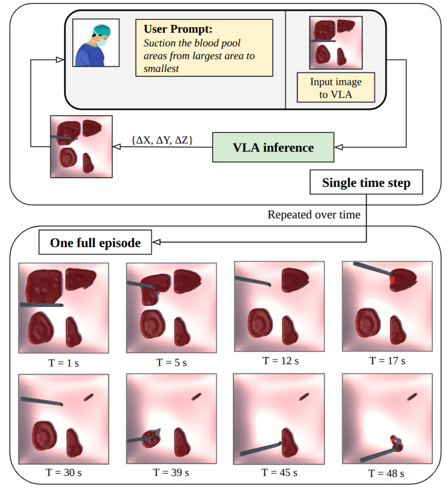
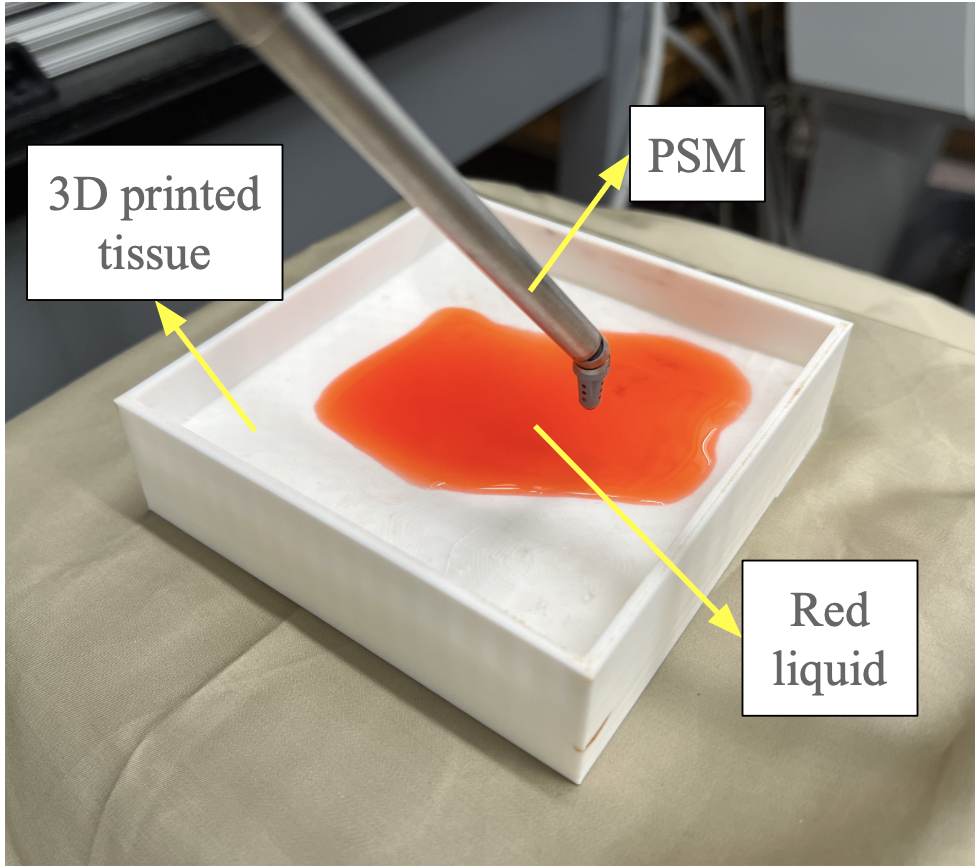
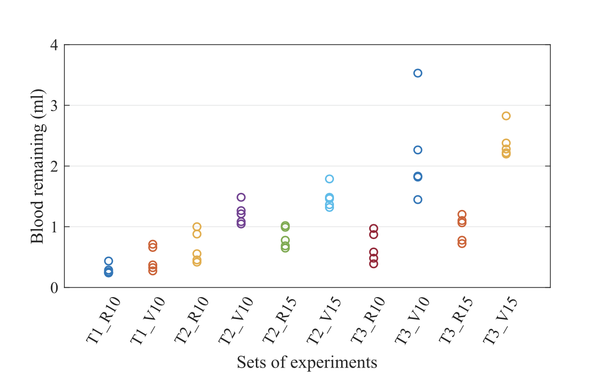
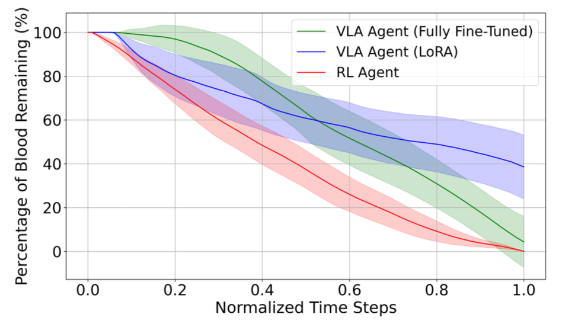

Vision-Language-Action Model for Robot-Assisted Blood Suction

Project Date: 2025
Project Overview
This project introduces an end-to-end Vision-Language-Action policy for
autonomous blood suction in robot-assisted surgery. The blood simulator has been developed in Unity using PhysX engine 5.0.
The system receives
a live image of the surgical scene together with a natural-language
instruction and directly predicts continuous motion commands for the
robotic suction tool.
Unlike hierarchical approaches that separate task planning, perception,
and low-level robot control, the proposed method combines these components
within a single generalist model. The objective was to investigate whether
a language-conditioned VLA policy could achieve performance comparable to
a specialized reinforcement-learning controller.
How the System Works
-
A camera captures the current state of the surgical field.
-
The image and a language instruction are passed to the fine-tuned
OpenVLA model.
-
The model predicts continuous tool movements in the
Δx, Δy, and Δz directions.
-
The suction tool executes the predicted movement and removes nearby
blood particles.
-
The process repeats in real time until the blood pool is cleared.
Simulation and Dataset
Training data were collected in the CRESSim surgical simulator, which
models deformable tissue, blood particles, active bleeding sources, blood
clots, and multiple independent blood pools.
-
Blood was simulated using Position-Based Dynamics.
-
Human demonstrations were collected using an Xbox controller.
-
Each sample contained an image, a language instruction, and a
corresponding robot action.
-
The dataset included scenes with one, two, and four blood pools.
-
Four different suction instructions were used during data collection.
-
The final dataset was converted into RLDS format for OpenVLA training.
Model Training
The OpenVLA foundation model was adapted to the blood suction task using
two training strategies:
LoRA Fine-Tuning
-
Updated only a small subset of the model parameters.
-
Required significantly less computational power.
-
Completed in approximately two hours on an NVIDIA RTX 4090.
-
Produced limited performance because of the large domain gap between
general manipulation data and surgical fluid scenes.
Full Fine-Tuning
-
Updated the vision encoder, projection layers, and language model.
-
Adapted the model more effectively to surgical images and fluid dynamics.
-
Completed in approximately three hours using eight NVIDIA A100 GPUs.
-
Achieved substantially better suction performance than LoRA.
Key Results
Simulation Performance
-
The fully fine-tuned VLA removed approximately
92% of blood particles on average.
-
Some simulation trials achieved complete blood removal.
-
The average end-to-end inference latency was approximately
235 ms on an NVIDIA RTX 4090.
-
The model remained effective when the background color, number of
blood pools, and initial suction-tool position were changed.
Path Planning
-
The VLA followed highly consistent and repeatable trajectories on
unseen blood-pool maps.
-
Its behavior resembled human demonstrations by clearing one region
before moving to the next.
-
The VLA required significantly fewer simulation steps than the
reinforcement-learning baseline.
-
The reinforcement-learning agent still achieved more complete blood
removal in the tested simulation episodes.
Language Instruction Following
-
The model was tested with instructions based on pool size, blood
clots, and active bleeding.
-
Success rates ranged from approximately
45% to 60% in two-pool scenes.
-
Performance decreased when four blood pools were present.
-
The main difficulties were spatial reasoning, size comparison, and
long-horizon multi-step planning.
Real-World Performance
-
The system was transferred to a da Vinci Research Kit suction tool.
-
Tests were performed using 3D-printed tissue models and red liquid.
-
On white and gray tissue surfaces, the system often left only around
10% of the original liquid area.
-
Performance degraded on dark blue surfaces because the blood region
had lower visual contrast.
Main Contributions
-
Developed an end-to-end VLA policy for autonomous surgical blood suction.
-
Integrated a generalist VLA model with a physics-based fluid simulation.
-
Compared LoRA and full fine-tuning for a specialized surgical task.
-
Evaluated suction efficiency, path consistency, language understanding,
robustness, and sim-to-real transfer.
-
Demonstrated that a generalist VLA can approach reinforcement-learning
performance while producing more efficient and human-like trajectories.
Current Limitations
-
Limited understanding of spatial and comparative instructions.
-
Reduced performance on long, multi-step commands.
-
Sensitivity to visual domain changes, particularly dark backgrounds.
-
Slightly lower blood-removal completeness than a specialized RL policy.
Technologies Used
- Vision-Language-Action Models
- OpenVLA
- LoRA and Full Fine-Tuning
- PyTorch
- CRESSim Surgical Simulator
- Unity and NVIDIA PhysX 5
- Position-Based Fluid Dynamics
- Python and OpenCV
- Da Vinci Research Kit
- Simulation-to-Real Transfer
- NVIDIA RTX 4090 and A100 GPUs
Project Gallery


